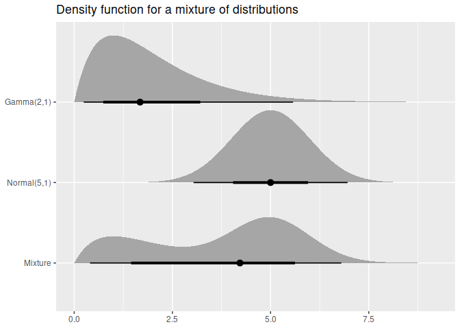

The distributional package allows distributions to be used in a vectorised context. It provides methods which are minimal wrappers to the standard d, p, q, and r distribution functions which are applied to each distribution in the vector. Additional distributional statistics can be computed, including the mean(), median(), variance(), and intervals with hilo().
The distributional nature of a model’s predictions is often understated, with default output of prediction methods usually only producing point predictions. Some R packages (such as forecast) further emphasise uncertainty by producing point forecasts and intervals by default, however the user’s ability to interact with them is limited. This package vectorises distributions and provides methods for working with them, making distributions compatible with prediction outputs of modelling functions. These vectorised distributions can be illustrated with ggplot2 using the ggdist package, providing further opportunity to visualise the uncertainty of predictions and teach distributional theory.
Installation
You can install the released version of distributional from CRAN with:
install.packages("distributional")The development version can be installed from GitHub with:
# install.packages("remotes")
remotes::install_github("mitchelloharawild/distributional")Examples
Distributions are created using dist_*() functions. A list of included distribution shapes can be found here: https://pkg.mitchelloharawild.com/distributional/reference/
library(distributional)
my_dist <- c(dist_normal(mu = 0, sigma = 1), dist_student_t(df = 10))
my_dist
#> <distribution[2]>
#> [1] N(0, 1) t(10, 0, 1)The standard four distribution functions in R are usable via these generics:
density(my_dist, 0) # c(dnorm(0, mean = 0, sd = 1), dt(0, df = 10))
#> [1] 0.3989423 0.3891084
cdf(my_dist, 5) # c(pnorm(5, mean = 0, sd = 1), pt(5, df = 10))
#> [1] 0.9999997 0.9997313
quantile(my_dist, 0.1) # c(qnorm(0.1, mean = 0, sd = 1), qt(0.1, df = 10))
#> [1] -1.281552 -1.372184
generate(my_dist, 10) # list(rnorm(10, mean = 0, sd = 1), rt(10, df = 10))
#> [[1]]
#> [1] 1.262954285 -0.326233361 1.329799263 1.272429321 0.414641434
#> [6] -1.539950042 -0.928567035 -0.294720447 -0.005767173 2.404653389
#>
#> [[2]]
#> [1] 0.99165484 -1.36999677 -0.40943004 -0.85261144 -1.37728388 0.81020460
#> [7] -1.82965813 -0.06142032 -1.33933588 -0.28491414You can also compute intervals using hilo()
hilo(my_dist, 0.95)
#> <hilo[2]>
#> [1] [-0.01190677, 0.01190677]0.95 [-0.01220773, 0.01220773]0.95Additionally, some distributions may support other methods such as mathematical operations and summary measures. If the methods aren’t supported, a transformed distribution will be created.
my_dist
#> <distribution[2]>
#> [1] N(0, 1) t(10, 0, 1)
my_dist*3 + 2
#> <distribution[2]>
#> [1] N(2, 9) t(t(10, 0, 1))
mean(my_dist)
#> [1] 0 0
variance(my_dist)
#> [1] 1.00 1.25You can also visualise the distribution(s) using the ggdist package.
library(ggdist)
library(ggplot2)
df <- data.frame(
name = c("Gamma(2,1)", "Normal(5,1)", "Mixture"),
dist = c(dist_gamma(2,1), dist_normal(5,1),
dist_mixture(dist_gamma(2,1), dist_normal(5, 1), weights = c(0.4, 0.6)))
)
ggplot(df, aes(y = factor(name, levels = rev(name)))) +
stat_dist_halfeye(aes(dist = dist)) +
labs(title = "Density function for a mixture of distributions", y = NULL, x = NULL)
Related work
There are several packages which unify interfaces for distributions in R:
- stats provides functions to work with possibly multiple distributions (comparisons made below).
- distributions3 represents singular distributions using S3, with particularly nice documentation. This package makes use of some code and documentation from this package.
- distr represents singular distributions using S4.
- distr6 represents singular distributions using R6.
- Many more in the CRAN task view
This package differs from the above libraries by storing the distributions in a vectorised format. It does this using vctrs, so it should play nicely with the tidyverse (try putting distributions into a tibble!).